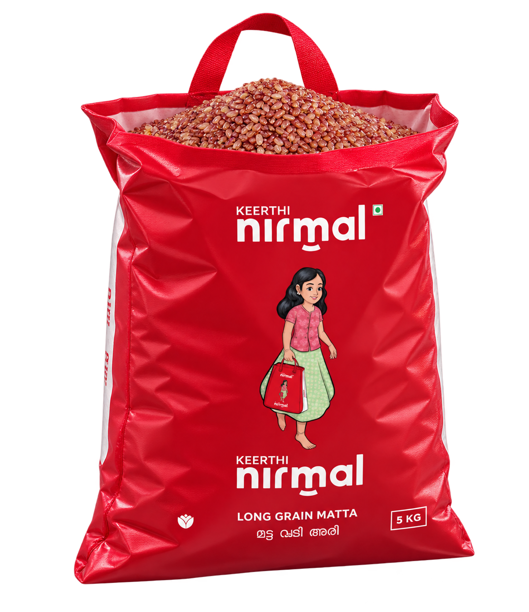
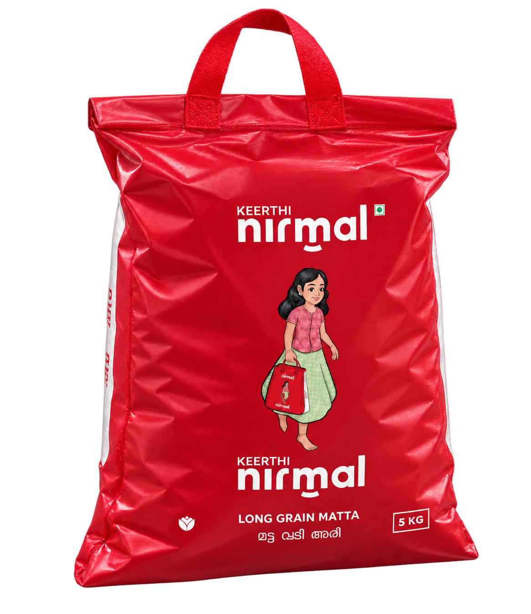

A LITTLE GRAIN. A BEAUTIFUL JOURNEY.
Respectfullysourced.Responsiblydelivered.
Good food starts long before the kitchen.
Ours begins with a little grain. And a lot of care.
01 / THE ORIGINGOODNESS STARTS HERE
NATURE DOES THE EXTRAORDINARY.
We begin
with
respect.
For the land that grows it. The hands that nurture it. And the homes that welcome it.
Every grain carries a little of where it comes from. We make sure that goodness goes with it.
Discover our rootsFROM A SEED OF POSSIBILITY.
02 / THE PROCESSNOTHING GOOD LEFT TO CHANCE
Precision that
preserves purity.
A little care makes a world of difference. From careful selection to thoughtful processing, every step protects what makes our rice special.
- 01Carefully selected↗
- 02Cleaned with precision↗
- 03Goodness preserved↗
SMALL DETAILS. A BIG DIFFERENCE.
03 / THE PROMISEFROM OUR HANDS TO YOUR HOME
Growing with care.
Giving back with purpose.
All that care.
In every little grain.
RESPONSIBLY DELIVERED.


A TASTE OF HOMELong Grain
Long Grain
Matta Rice
The familiar grain at the heart
of a truly comforting meal.
THE NEXT CHAPTER? YOUR TABLE.A little more about us